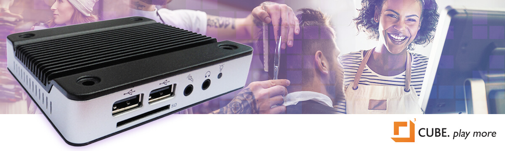

CUBE Physical Player : $199 once-off
When you’re playing music at your store, there is always equipment responsible for doing the playback, outputting the audio signal into your amplifier and speakers. Either you’re using a physical player device, like CUBE, or you’re running software on a phone, tablet or computer. In any case, there is always some piece of equipment involved.
There are a number of advantages in using a dedicated CUBE industrial music player:
Uses a fraction of the bandwidth that may be needed for your core business.
- When your music is being streamed over your internet connection, this can use as much as 100 times more bandwidth than a CUBE solution which automatically stores the songs locally, able to use them again.
- Streaming can slow your network down, making other business functions (like processing of transactions) take longer.
- When your internet has an outage, or is slow, your music will be interrupted. This is not the case if you use a CUBE player.
Storing music on a device like a tablet can use a large portion of available storage, while significantly reducing device life expectancy.
- A good quality music program can easily use up 16GB of space. Or more, if you want to be able to change between programming locally. This can use up a significant portion of the storage you have available on your tablet or phone. You may not have space for much else.
- The more frequently the software has to change out songs on your tablet, the faster its storage memory will wear out. Yes, flash storage memory wears out, and your tablet will gradually get slower and slower because of this. If you’ve expanded its storage with the kinds of SD cards you can buy from computer stores, the SD card will wear out even faster than the tablet; and you’ll have to keep buying replacement cards..
Unlike other playback devices, CUBE has been designed with security in mind.
- Some music services use their own playback devices, similar to CUBE. However, did you know that many of these systems are not very secure? These days, anything that is connected to the internet, that has not been designed with security in mind, is at risk of being broken into remotely
-
You can also see these articles about simple internet webcams being broken into and used to launch attacks:
Security Article 1
Security Article 2 -
Playback devices based on an Android operating system have, for example, been frequently hacked by using malicious MP3 and MP4 files:
See this article - If you have an insecure device on your network that is taken over, not only does this place your customers at risk through the theft of private data from your network; it can also mean substantial bandwidth usage because your internet connection can then be used to attack others. CUBE has been designed with lots of security built in. We worry about security, so that you don’t have to!
Other Advantages of the CUBE Player:
Easily installs in seconds.
The CUBE industrial music player easily plugs right into your existing sound system using standard RCA audio connectors (provided) and links directly to your broadband router to gain internet access.
Vastly superior sound.
Your customers will experience a vastly superior sound quality that only comes from the best industrial-grade business music player in the industry.
Smart and easy-to-use tools.
This includes the flexibility to change music selections 'on the fly' using your tablet or smartphone, block artists or songs you don't like, and CUBE music blending for fast creation of your own unique sound. CUBE is the most flexible background music player available.